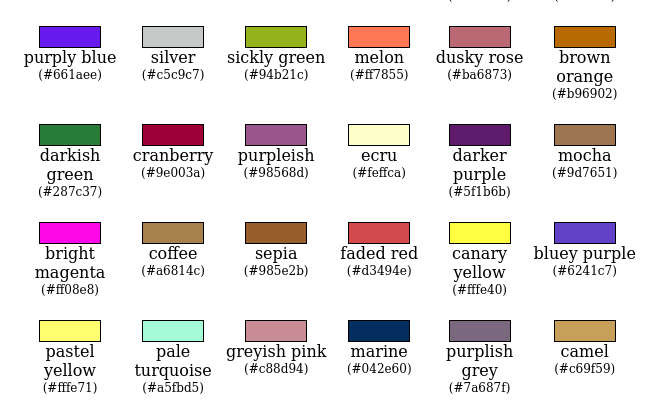
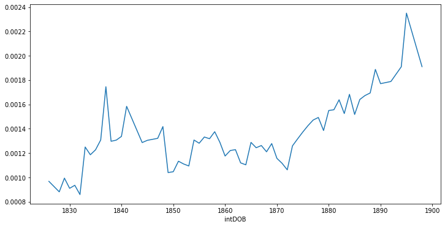
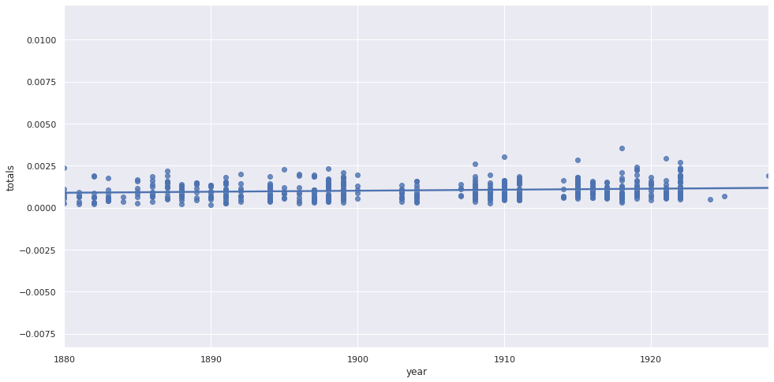
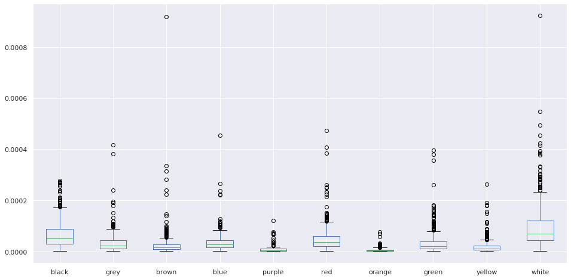

Presenting the Problem: Color in Modernist Studies
Literary Description
Poetry/prose
First Considerations
Maerz and Paul note that there is a doubly fleeting quality to colors: “the confused ideas on color nomenclature are found due to two factors, one material, the other intellectual. The first has been the ability of color makers, in the past, to produce color substances that were both brilliant and permanent … the second is the difference of opinion as to the exact color indicated by any name, and the lack of any authority by which an individual opinion can be upheld.” (Maerz and Paul 1)
Later: “the name Lemon Yellow would seem sufficiently accurate as a descriptive term, yet the color of lemons varies slightly and the memory for exact color sensations, when the original is not at hand, is often faulty.” (1)
In Ulysses, lemons and lemon-yellow is a leitmotif that appears at intervals throughout the novel. First appearing in the Telemachus episode as the “Paris fad” for tea which Buck Mulligan rejects in favor of “Sandycove milk” (Stephen has just recently returned from Paris, and had aquired some of its habits), the color appears in “Proteus,” as Stephen muses about the effects of sunlight on the color of the houses: “Gold light on sea, on sand, on boulders. The sun is there, the slender trees, the lemon houses. ¶ Paris rawly waking, crude sunlight on her lemon streets” (Joyce, Ulysses 10, 35). Neither the Sandymount houses nor the Paris cobblestones are painted lemon-yellow, of course, or appear so at all other times of day, but they look this way under the reflection of the early morning light. Stephen, a poet, is more interested in the phenomenon of the visual experience than the categorical one which would describe the houses by the name of their paint, or the stones as gray.
Bloom, too, imagines the skin of his naked body in the bath, as “lemonyellow,” not because he is jaundiced, or of olive-toned Mediterranean complexion, but because he imagines the light catching his body, “oiled by scented melting soap,” the lemon-scented and lemon-colored soap he’d just bought (Joyce, Ulysses 71). When Bloom later notices the scent of “citronlemon” in his handkerchief, he conflates the citron, an ancestor of the lemon and the French word for lemon, with Israel Citron, a real Dubliner about whom he had been thinking two paragraphs earlier (Gifford 74, 133). Don Gifford suggests that Bloom “associates the soap with the citron (Ethrog) central in the ritual of the Jewish Feast of Tabernacles (Sukkoth) (133). In the surreal dream of the Circe episode, this soap reifies,”diffusing light and perfume," and speaks in terms of light and reflections: “we’re a capital couple are Bloom and I. He brightens the earth. I polish the sky” (Joyce, Ulysses 340).
To these problems, Maerz and Paul add that the color of lemons themselves varies. In fact, lemons themselves are green before they ripen, and green in certain varieties. In French, a language Stephen often daydreams in, lemons and limes are citron and citron vert, (“green lemons”) most commonly, meaning that lemons can be both yellow and green, in that language’s taxonomy. However, the color lemon, in English and in French, invariably refers to a bright yellow, despite any variation in its actual color. This is a problem in in color categorization, which I will discuss below: everyone knows that lemons are yellow, blood is red, and so on. But lemons are also green, and blood is usually brownish.
Gilbert and Linati schemata both give “gold/white” as the colors for “Telemachus”; “Proteus” however has a corresponding color of green.
Gilbert just mentions this in passing: “Certain episodes have also their appropriate colour (a reference, as M. Larbaud has pointed out, to Catholic liturgy)” (Gilbert 29).
The eye thinks
Eye of the beholder
The eye “thinks” - Feynman
Goethe “we naturally place these colours first, because they belong altogether, or in a great degree, to the /subject/—to the eye itself. … Thus they are called colores adventicii by Boyle; imaginarii and phantastici by Rizetti; by Buffon, couleurs accidentelles; by Sherfer, scheinfarben (apparent colours); ocular illusions and deceptions of sight by many; by Hamberger, vitia fugitiva; by Darwin, ocular spectra” (Goethe and Eastlake 1–2).
On the Impossibility of a Bluish Yellow
Ludwig Wittgenstein, in his late work Remarks on Color, [/Bemerkugen über die Farben/, written in 1950], asks whether it is possible to imagine a “bluish yellow”:
If you call green an intermediary colour between blue and yellow, then you must also be able to say, for example, what a slightly bluish yellow is, or an only somewhat yellowish blue. And to me these expressions don’t mean anything at all. But mightn’t they mean something to someone else? (Wittgenstein and Anscombe 20e)
Wittgenstein then asks whether a “reddish green” or other color combinations might be difficult to imagine, and why. He posits that the category of green is what prevents him from imagining “bluish yellow,” since, he says, “for me, green is one special way-station on the coloured path from blue to yellow…” (Wittgenstein and Anscombe 22e). This is an important question. Written more abstractly, we might ask: why do linguistic categories—color words and their currency in our language—transform our ability to imagine? I say “our” here with some hesitation, since I suppose an affinity with others who might experience color terminology in the same way, but recognize that a painter, with years of experience mixing colors, might imagine these terms differently, as would, most likely, a speaker of a language very different from English.
Determined to test Wittgenstein’s thought experiment, I constructed a matrix of color expressionions from the XKCD color map, where one word ends in -ish, shown here in [fig:ishMatrix].
color
purplish
greenish
bluish
greyish
tealish
reddish
pinkish
lightish
brownish
darkish
purpley
yellowy
bluey
yellowish
purpleish
orangish
light
orangeish
red
purplish red
nan
nan
nan
nan
nan
pinkish red
lightish red
brownish red
darkish red
nan
nan
nan
nan
nan
orangish red
nan
nan
blue
purplish blue
greenish blue
nan
greyish blue
nan
nan
nan
lightish blue
nan
darkish blue
purpley blue
nan
nan
nan
purpleish blue
nan
light greenish blue
nan
brown
purplish brown
greenish brown
nan
greyish brown
nan
reddish brown
pinkish brown
nan
nan
nan
nan
yellowy brown
nan
yellowish brown
nan
orangish brown
nan
nan
pink
purplish pink
nan
nan
greyish pink
nan
reddish pink
nan
nan
brownish pink
darkish pink
purpley pink
nan
nan
nan
purpleish pink
nan
nan
nan
grey
purplish grey
greenish grey
bluish grey
nan
nan
reddish grey
pinkish grey
nan
brownish grey
nan
purpley grey
nan
bluey grey
nan
nan
nan
nan
nan
yellow
nan
greenish yellow
nan
nan
nan
nan
nan
nan
brownish yellow
nan
nan
nan
nan
nan
nan
nan
nan
nan
teal
nan
greenish teal
nan
greyish teal
nan
nan
nan
nan
nan
nan
nan
nan
nan
nan
nan
nan
nan
nan
tan
nan
greenish tan
nan
nan
nan
nan
pinkish tan
nan
nan
nan
nan
nan
nan
yellowish tan
nan
nan
nan
nan
turquoise
nan
greenish turquoise
nan
nan
nan
nan
nan
nan
nan
nan
nan
nan
nan
nan
nan
nan
nan
nan
beige
nan
greenish beige
nan
nan
nan
nan
nan
nan
nan
nan
nan
nan
nan
nan
nan
nan
nan
nan
cyan
nan
greenish cyan
nan
nan
nan
nan
nan
nan
nan
nan
nan
nan
nan
nan
nan
nan
nan
nan
purple
nan
nan
bluish purple
greyish purple
nan
reddish purple
pinkish purple
lightish purple
brownish purple
darkish purple
nan
nan
bluey purple
nan
nan
nan
nan
nan
green
nan
nan
bluish green
greyish green
tealish green
nan
nan
lightish green
brownish green
darkish green
nan
yellowy green
bluey green
yellowish green
nan
nan
light bluish green
nan
orange
nan
nan
nan
nan
nan
reddish orange
pinkish orange
nan
brownish orange
nan
nan
nan
nan
yellowish orange
nan
nan
nan
nan
Not only are there no entries for bluish yellow or reddish green here, but a few other patterns are apparent.
Yellowish green is not the same as greenish yellow, indicating that the first adjective indicates a lesser amount of the color mixed with a greater amount of the second.
Those colors that take -ish adjectives are common colors. However common a color like maroon might be, reddish maroon does not appear in this list, potentially because it’s not considered a basic color with the ability to be mixed. However, some colors which are common in marketing, like beige and teal, but which are less common in paint names, are present here.
Orangeish and orangish, variant spellings of the word, have different average colors here.
Orangish is used as a modifier half as much as orange is modified by an -ish.
Pink has many variations here, despite being simply a shade of red.
Greenish and brownish are much more versatile as modifiers than others.
Similarly, green is much more easily /-ish/ed than other colors.
“The Dress”
Imagining Words: Mapping Words to Colors
What we need in a good color mapping:
Consensus. Color names should not be too subjective, since we want language that can be evocative with some degree of reliability. To this end, word/color pairs that appear in more than one map should be weighted higher than those that only appear in one.
Synchronic. The color names should not be anachronistic to the texts we are trying to understand. So a color like cyberspace blue is not very irrelevant to an understanding of a Virginia Woolf novel. However there is a sense in which it does: the imagination of a contemporary reader applies to his or her understanding of a literary work.
Syntopic. Army green and navy blue refer to the uniforms of their respective countries. However, the proliferation of these colors between militaries makes this difference small.
Objectivity. We need to mitigate the influence of marketing on color naming. Paint manufacturers and similar organizations have a way of describing colors that are meant to sell paint: they skew towards pleasant color names. Yet not all colors are pleasant ones.
However colors on the whole do skew pleasant. They show attention, since they’re only available in the center of one’s field of vision.
Size. It would be best not to exclude colors simply because they don’t appear in a pack of Crayola crayons. Yet the more colors one includes, the more chances there are of metaphors that are more subjective, and farther afield.
A related issue is the algorithm by which color words are matched in a text.
Fuzziness. blue-green and blue green should be categorized together as the same color. Yet blue! Green, that is, at the end of one sentence and the beginning of another, should not be categorized together.
absinthe green should match absinthe as well as absinthe green.
“Green” and “greenness” are in the same family, but are not necessarily synonyms, since “greenness” connotes something more abstract. There needs to be a way to collapse these.
Heuristic Mappings
Summary and Statistics
Table of color mappings
Abbreviation
Name
Number of Color/Word Pairs
Year
Weight
\(CM_S\)
Chromotaxia Seu Nomenclator Colorum
500
1894
2
\(CM_R\)
Color Standards and Color Nomenclature
1113
1912
2
\(CM_M\)
2
\(CM_X\)
XKCD Color Survey
954
2012
4
Historical
Ridgway
Some of the most ambitious attempts at mapping colors to their names, or naming colors, came from the natural sciences. American ornithologist Robert Ridgway (1850-1929), for example, authored two influential works of color naming systems: A Nomenclature of Colors for Naturalists in 1886 , and Color Standards and Color Nomenclature in 1912. In the preface of the earlier work, Ridgway names as his problem that “the author has in collection considerably over three hundred water-colors, each bearing a different name.”
Saccardo
Another influential work of color naming is the ambitious and polyglot volume from Italian botanist Pier Andrea Saccardo bearing the formidable Latin title, Chromotaxia Seu Nomenclator Colorum, Polyglottus, Additis Specimibus Coloratis ad Usam Botanicorum et Zoologorum (1894). Although containing only fifty colors, it features an index of several hundred “synonyms” for these colors in Latin, Italian, French, English, and German. While some of these are recognizable to modern readers, others seem strangely specific, such as Murinus (mousey) or Fuligineus (“sooty”). Saccardo provides two supplementary colors: achrous, or colorless, glassy; and sordidus, or “sordid,” “dirty,” which he describes as a modifier rather than a color. [fn:“non est color definitus sed indicat inquinamentum aliorum colorum. Exempla: sordide albus, luride ruber” (Saccardo 16).]
Maerz and Paul
From Jaffer
XKCD
Among the more useful color mappings is one from Russell Monroe, an American author, former NASA engineer, and cartoonist best known for his webcomic XKCD. Monroe surveyed his wide readership, asking them to name colors they were shown at random on his website. He also took demographic data from them, logged their locations via their computers’ addresses, and asked them whether they were colorblind, or used a cathode ray tube monitor. The survey results, which represent the five million color mappings from 220,500 users, show a consensus for many color names, as shown in .
XKCD Color Mappings
This mapping presents a useful counterpoint to commercial mappings such as that of Munsell and Pantone, or to more systematic mappings like Ridgway’s. In the sample presented in [fig:xkcdBlocks], we see a mix of naming metaphors. The usual food metaphors (melon,mocha,coffee) appear next to animal metaphors (camel,canary yellow) and creative compounds indicating a small amount of one color mixed into another (purplish, bluey, purply, preyish). The informality of the “-ish” suffix suggests extemporaneous description, as if colors are mixing in the imaginations of these survey respondants, in the absence of a ready-made metaphor. For comparison, greyish pink in this color map is blush in Pantone, and darkish green translates to online lime. And of course, one would expect that sickly green would not be an easily marketable name for a commodity, especially if it were food, so in Pantone the color is lime green.1
Pantone
Mercantile
Food-related
Jaffer?
Deep Imagining
Image-based
Saturation notes
Dictionary-based
No white sheep problem
Word Proximity-based
Words and their proximity to color words
Named Entity Recognition NER
Categorization
Debates on Color Categories and Nomenclature
If we aim to quantify the occurences of certain color concepts, and not just the color words, then there must be a way to categorize visual experiences. For instance, if we encounter the expression light blue, we must be able to categorize this as a variety of blue, or else we will need to process and compare thousands of variables, instead of just a few. Yet the epistemological problems of the color/word interchange make this a difficult task. To begin with, since we are dealing with spectra, the boundaries of these categories are not well-defined. But the very existence of the categories themselves should not be assumed, either. While, to a painter or interior designer, the differences between ecru and eggshell may be crucial, these words may not be in the working vocabularies of some novelists. I say “working” here because they might be recognizable, and even familiar, to a writer, but they might not be the operative metaphors he or she chooses when describing a scene, or allowing a literary persona to describe it. So the color spectrum of a writer’s idiolect is always a subset of his or her dialect.
For instance, we might consider light blue to be a subcategory of blue, since the word blue is contained within it. However, is pink necessarily its own category, or is it simply a shade of red? And if so, is light pink a subcategory of pink or of red? We might categorize these colors differently if we were to use the hues rather than their written expressions.
We might look to other languages to see how these concepts are expressed, and learn about our own by comparison. Some languages lack a monolexemic term for pink, and others still have additional pink-like lexemes in other hue spectra. The Russian language, for instance, has the color-categories, or monolexemic color terms, синий, usually translated as “blue” or “dark blue,” and Голубо́й which we might gloss as “light blue,” or “sky blue.” The image-based color mapping model, described in section TODO below, predicts similar, but not identical colors for these English and Russian words, as well as their most common French translations:
Russian
Ru.RGB
English
En.RGB
French
Fr.RGB
синий
#163B97
blue
#1A5AB6
bleu
#0C4397
Голубо́
#75A7CD
light blue
#83CFE8
bleu claire
#8DC7D9
Semantically and chromatically, these color categories are not synonymous. Just in the way that every translation requires some compromise, some reshaping, colors do not always cleanly map across languages. Some do: English blue and French bleu, as etymological kin, are not only morphologically closer than the English/Russian pair, but semantically, as well, and the model predicts this kinship.
The differences in color terminology between languages are important for us to bear in mind, even when the primary analysis below deals only with texts in English, because these differences are analogs for the gaps, and communications, between language and vision.
Furthermore, most of the writers I’ll be discussing here speak more than one language: either from birth, as with Conrad and his native Polish, or through study, as with James Joyce, who was fluent at least five languages. And there have been some experiments in psychology that show semantic shifts in color categorization among speakers of more than one language (Ervin; Caskey-Sirmons and Hickerson; Athanasopoulos et al.).
In order to categorize color words, we must first decide what our base color categories will be. This is no easy matter, and has long been the subject of debate. By comparing languages, linguists have often tried to ascertain what fundamental colors are.
One side of this debate calls into quesion the basis of fundamental colors, instead positing that color nomenclature, along with other phenomena, is in fact a cultural or linguistic construct. Probably the most well-known of these theories of linguistic relativism is that independently promoted, starting around the 1930s, by linguists Edward Sapir and Benjamin Whorf.
Whorf’s 1940 summary of this view puts it succinctly: “the categories and types that we isolate from the world of phenomena we do not find there because they stare every observer in the face. On the contrary the world is presented in a kaleidoscopic flux of impressions which have to be organized in our minds. This means, largely, by the linguistic system in our minds” (Whorf 212).
On the other side of the debate, usually termed universalism, is an influential study of cross-linguistic color terminology, in a 1969 monograph of Brent Berlin and Paul Kay, Basic Color Terms: Their Universality and Evolution(Berlin and Kay 2). In particular, they name eleven categories: “white, black, red, green, yellow, blue, brown, purple, pink, orange, and grey,” and suggest that these categories develop in roughly that order—that all languages have words for white and black, that if they have a third, it is red, and so on.
Graphically, Berlin and Kay present this sequence as in the following diagram, where languages that have red must have both white and black, and so on. There is no order between yellow and green, but languages that develop a word for green would then develop a word for yellow, and vice-versa.
Berlin and Kay see this sequence as a linguistic evolution in more than one sense—a dangerous term, in that it suggests a linear progression of simple to complex languages. The reasons they give for this are “increasing technological and cultural advancement” among the languages they compare. By way of explanation, they suppose that,
… to a group whose members have frequent occasion to contrast fine shades of leaf color and who possess no dyed fabrics, color-coded electrical wires, and so forth, it may not be worthwhile to rote-learn labels for gross perceptual discriminations such as green/blue, despite the psychophysical salience of such contrasts. (Berlin and Kay 16)
While the contrasts might have so physical basis, their linguistic categories do not map evenly to them, as Berlin and Kay themselves show. And as one might predicted, since 1969, their arguments of universal categories—and to a larger extent those of language evolution—have been either denounced as Anglocentric, or at least treated with a healthy skepticism. For instance, in 2006, Anna Wiezbicka argues that even the notion of color itself is not universal. Citing decades of research within the subfield of Natural Semantic Metalanguage, Wiezbicka argues that, “while many languages do not have a word for ‘colour,’ all languages have a word for seeing,’” and that “it makes more sense to ask about the universals of seeing rather than any putative ‘universals of colour’” (Wierzbicka 3).
Color Spaces and Color Difference
We now move from categorical description of color to quantitative. Unfortunately, this presents its own set of problems, as there are a multitude of ways to quantify color properties, and to organize colors by those properties.
There are a number of admirable works which describe in very precise detail the differences between the most common contemporary color spaces (Fairchild, for instance). This is a problem which has been extant since antiquity, and is still not considered solved, now. The biggest problem is that hues themselves, due to the anatomy of the eye, do not have linear properties. Furthermore, difficulties involved in color quantification include differences in ocular physiology across individuals; differences in ambient reflectors, illuminants, and other lighting conditions; and differences in reference points (white values used as anchors for other color properties). We will not need these details, but a summary of these color spaces is necessary, since I will be using many of them below.
The most common color spaces in use today include RGB, which stands for red, green, and blue; CMYK, or cyan, magenta, yellow, and white; HSL, or hue, saturation, and luminosity; and CIELAB, a newer color space which I will discuss below. RGB is the most common color space in computer monitors, and generates colors additively, by mixing red, green, and blue light. These values are often expressed in hexidecimal, with the marker #, such that #ff0000, red, indicates the highest value for red (ff), along with the lowest value for green (00), and the lowest value for blue (00). CMYK is the most common for print media, on the other hand, and describes colors subtractively, combining cyan, magenta, and yellow. HSL is a useful derivative of RGB, meanwhile which allows for numeric manipulation of colors according to these values of hue, saturation, and luminosity.
The current standard colorspace, CIE \(L^* a^* b^*\), usually abbreviated CIELAB, is a product of a century’s long effort by the Commission Internationale de l’Eclairage [International Commission on Illumination], or CIE, an organization formed in 1913 to solve problems of chromaticity standardization, among others. A 1973 meeting of the CIE Colorimetry Committee, having evaluated a number of previously used color difference formulae, produced the first iteration of the LAB colorspace, intended to model human color perception. Here, \(L^*\) represents luminosity, \(a^*\) represents a spectrum of hues between green and magenta, and \(b^*\) represents hues between blue and yellow.
Relations between colors may then be calculated with respect to this coordinate system. The Euclidean distance between two colors in a LAB vector is therefore the square root of the differences of each of its components. The CIE calls this formula \(\Delta E\)(Robertson 167).
Since LAB space best represents human perception of color, I’ll use it whereever possible, and calculate color distances using \(\Delta E\).2 However, I have to translate frequently between LAB space and RGB space, since most of the color maps I’ve derived, are either scanned using digital photography, or, in the case of the XKCD map, produced using computer monitors.
Is blood red?
While categorizing colors using CIELAB \(\Delta E\), I came across some unexpected results. The category for the XKCD color word blood (#770001) gets categorized as brown, instead of red, as one might have predicted. Incidentally, blood red (#980002) is an entirely different color in the XKCD map, which is redder (i.e., contains a higher R value in its RGB representation) than blood. And dried blood (#4b0101) also exists, and is mapped to a darker red.
My initial feeling was that blood was miscategorized as a brown, and should instead be categorized as red. We all know blood is red–the term blood red itself proves it, right? But to look through images of blood, we may, in fact, discover that it is not red, but at best, a reddish brown. This is seemingly confirmed by the deep imaginer’s image-based imagined color (described below), which is #915b47. An image search at a stock photo provider like Unsplash or Pexels seems to confirm this, as well. However, crucially, the same searches for illustrations, rather than photos, depict blood as a bright red, instead of reddish brown—this seems to show that the linguistic-cognitive concept of blood is aligned with the concept of red, even though they aren’t visually equivalent. So when the OED editors, however meticulously they document theusages of blood-red, which date back to early Old English, gloss the term disappointingly literally as “red like blood; blood-coloured,” (OED, “blood-red”), [TODO: add to bibliography] they do not account for the discrepancy between the color of “blood-red” and the actual color of blood.
In British literature of this period, blood-red is often used to evoke other qualities of blood, although not necessarily its true color. In the hell-sermon that is the pivotal scene in Joyce’s A Portrait of the Artist as a Young Man, it is used to underscore the apocalyptic scene that Father Arnall is trying to describe: “the doomsday was at hand. The stars of heaven were falling upon the earth … The sun, … had become as sackcloth of hair. The moon was bloodred” [TODO: cite 99]. Lunar eclipses, in which the sun’s light on the moon is eclipsed, leaving only the earth’s light, make the moon appear dark red. These have long been described in English as a blood moon, but this is not just a color comparison: it is a metaphor which anthropomorphizes the moon in this state, comparing the moon’s face to one whose face has filled with blood, out of anger or another heightened emotional state. Father Arnall’s use of this metaphor, along with his simile for the sun, anthropomorphize heaven as a way to dramatize the wrath of God.
In Thomas Hardy’s 1892 Tess of the d’Urbervilles, Tess is described, in an early foreshadowing scene, as “not divining” that Alec d’Urberville, “one who stood fair to be the blood-red ray in the spectrum of her young life,” would come to be “the tragic mischief of her drama” [TODO: Broadview 73]. As in Joyce, “blood-red” allows for polysemy. First, it is “red in the spectrum of her life”: red is the first, highest-frequency, and longest-wavelength band of a prismatic or spectrographic projection of Tess’s life, implying that Alec will be for her among the first and most striking bands of her life. (Spectroscopy—a kind of scientific “divining” of the material composition of matter, based on the spectral composition of its light—had come of age as a science in the 1870s and 80s, only a decade or two before Tess’s publication.) Second, “blood red” here implies a more literal red which comes from blood: a blushing which is seen in human faces, as well as, by extension of the metaphor, flowers, and fruit. This is the culmination of a chapter’s worth of red imagery, since Tess and Alec have just been picking strawberries and roses, and it is intertwined with imagery of Tess’s coming-of-age, or blossoming as the floral metaphor often has it.
When blood-red is understood as blushing, however, this is not the color of external, disembodied blood, which we have already established is more akin to brown, but refers to pinkish, blood-rich skin. In the Hungarian language, to choose one cross-cultural example, there are famously two words for red, vörös, derived from the word for blood, and piros, of similar etymology, but referring instead to, as linguist Anna Wierzbicka posits, “the color of blood inside a person’s body (visible sometimes in an open wound and in a person’s ‘red’ face)” (???).
A red face, Wierzbica suggests, is not an attempt at accurately describing the color of someone’s face, but only that it has become more pink, i.e., taken on a more reddish hue than before. The red in question, then, is more of a reference to the concept of red, via blood and blood-red, than to the color phenomenon itself.
This red—again, not really the color red, but the concept—is the same red of rouge, the cosmetic used to emulate blushing, and whose name is derived from the French word for red. Rouge itself is often not red, but a somewhat reddish, pinkish, or purplish tint of another color. Max Beerbohm famously sings the praises of rouge, as a symbol of colorfulness and artifice, in an 1894 polemic in the short-lived by influential aestheticist journal bearing the name of another bright color: The Yellow Book. “The Pervasion of Rouge,” originally titled “A Defence of Cosmetics,” declares the end of the Victorian era, and thus “sancta simplicitas,” which we might interpret as a restricted color palette [TODO: cite]. Queen Victoria would not die, taking her eponymous era with her, for another seven years, but this declaration is an important herald of the “bright modernity” to come, as Blasszczyk and Spiekermann term it.
P. A. Saccardo’s taxonomy does not place the color of blood with red at all, however, but with purple: he gives sanguineus as a Latin synonym of purpureus, along with the Greco-latin hæmatochrous, hæmatinus, and hæmatites(Saccardo 8). This is the traditional categorization of classical antiquity: the mapping appears in Homer, where in the Iliad, the earth is wet with purple blood. A. T. Murray’s English translation of Homer gives “thus mighty Aias charged them, and the earth grew wet with dark blood,” [αἵματι δὲ χθὼν δεύετο πορφυρέῳ] although πορφυρέῳ, which is translated as dark, is an etymological ancestor of purple [TODO: cite Perseus project here]. This categorization continues through Vergil, Ovid, and Horace. In fact, as Jacquiline Clarke points out, Horace plays with the traditional Homeric association of πορφύρεος with the sea and with death (πορφύρεος θάνατος, purple death or dark death, appears thrice in the Iliad), by juxtaposing the two in a purple blood-stained sea (Clarke 132). However, Liddell and Scott are quick to warn that “Homer seems not to have known the πορφύρα, [a purple fish, or purple dye] so that the word does not imply any definite colour.” [TODO: cite this purseus page].
To further complicate matters, saccardo’s purpureus, while certainly on a spectrum that seems to range from red, to purple, and finally to brown, has a color of #8D0202, at least as it appears in the scanned edition from archive.org, however faded its original pigments may be. Some may rightly call this color red.
Words for red are often derived from blood. (Berlin and Kay 38)
The wine-dark sea
The first scene of Ulysses introduces a motif that recurs throughout the novel: the color of the sea. Here, Buck Mulligan is gazing out onto the Irish sea from the crenellated parapets of Martello tower, in Sandycove, south of Dublin, and musing at once irreverently and reverently:
God! he said quietly. Isn’t the sea what Algy calls it: a great sweet mother? The snotgreen sea. The scrotumtightening sea. Epi oinopa ponton. Ah, Dedalus, the Greeks! I must teach you. You must read them in the original. Thalatta! Thalatta! She is our great sweet mother. Come and look. (Joyce, Ulysses 2)
Is the sea “snotgreen”? \(CM_X\) contains several colors for sea, as shown in the table below, as well as two mappings for snot. (Snot is not present in other color maps—unsurprisingly, since it would not very likely be a marketable name for a paint.)
\(CM_X\) Name
RGB Hex
bright sea green
#05ffa6
dark sea green
#11875d
deep sea blue
#015482
light sea green
#98f6b0
sea
#3c9992
sea blue
#047495
sea green
#53fca1
snot
#acbb0d
snot green
#9dc100
And this list does not even include the many seafoam and seaweed variations. The variety of sea-like colors is an interesting problem, because seas themselves have a very wide range of colors among them, and even within any given sea. As suggested here in the name deep sea blue, the depth of the sea changes its apparent color.
For comparison, the image-based color model predicts #98B8B3 for /irish sea/—a somewhat snot-green color.
Epi oinopa ponton, according to Don Gifford, is Homeric Greek for “upon the wine-dark sea,” a classic Homeric epithet that occurs throughout The Odyssey(Gifford and Seidman 15). It has long been a puzzle of Homeric scholarship as to why the sea is not blue, or green, but “wine-dark.” We should remember, however, that “dark” is an artifact of this translation convention, for in the Greek, which Mulligan advisedly does not gloss, “ἐπὶ οἴνοπα πόντον” might also be rendered “over the vinaceous sea” or “over the wine-like sea,” since οἴνοπα itself, despite clearly being used as a visual metaphor elsewhere in Homer, does not explicitly contain a signifier for dark, which would be closer to μέλας in Homeric Greek—in fact, elsewhere in Homer, wine itself is described as μέλας, although not here [Gladstone 472; TODO: cite LSJ].
One of the more well-known works of scholarship on this topic, however dated it may be considered now, is that put forth in William Gladstone’s 1858 Studies on Homer and the Homeric Age. Athough better known as the four-term prime minister of the United Kingdom, discontinuously from 1868 to 1894, Gladstone was a Homeric scholar of some distinction, and among the more interesting theses of this work is his catalog and interpretation of color words in the Homeric epics.
After a thorough concordance of visual terminology in Homer—which what one might half-jokingly call a 19th century digital humanities project—Gladstone concludes that Homer’s color expressions are relatively few. He lists as Homer’s only color words—excepting color metaphors—as λευκός (white), μέλας (black), ξανθός (yellow), έρυθρός (red), πορφύρεος (violet), κυάνεος (indigo), φοίνιξ (a phoenix, or Phoenician, purple or indigo), and πόλιος, (gray, grizzled) (Gladstone 459). His color metaphors, though, number thirteen, among which is οἴνοπα.
Gladstone notes that Homer applies οἴνοψ to only two objects, oxen and the sea. This puzzles him, however, since:
“there is no small difficulty in combining these two uses by reference to the idea of a common colour. The sea is blue, grey, or green. Oxen are black, bay, or brown. … It is remarkable that, among colours properly so called, Homer has none whatever, derived from the name of an object, that are light, unless it be in the case of the rose” (Gladstone 472).
My personal feeling is that οἴνοπα functions just as πορφύρεος does as a visual descriptor of the sea, in the sense of “blood-red”: by comparing the sea to wine, it is not just the color that is compared, but other aspects, as well. We might imagine a tumultuous sea, for instance, which causes the ships upon it to sway as if drunken, as in Arthur Rimbaud’s poem “Le bateau ivre.” This same motion of the sea might also cause sailors on it to vomit as if they’d had too much wine.
The blood/wine/sea metaphoric trinity was not lost on Joyce, either: in the “Proteus” episode of Ulysses, we see Stephen daydream the following, looking again out at the Irish sea:
A tide westering, moondrawn, in her wake. Tides, myriadislanded, within her, blood not mine, oinopa ponton, a winedark sea. Behold the handmaid of the moon. In sleep the wet sign calls her hour, bids her rise. Bridebed, childbed, bed of death, ghostcandled. Omnis caro ad te veniet. He comes, pale vampire, through storm his eyes, his bat sails bloodying the sea, mouth to her mouth’s kiss.
Here, Stephen’s poetically free-associating imagination conjures a nighttime sea as “the handmaid of the moon,” because it is “pulled” by it in its tides. He extends this feminine analogy, via the conventional euphemism for menstruation, to a series of blood-soaked bedsheets, with their analogue in the bloodied sea, and a recollection of a sexual episode with a prostitute that Stephen will remember more fully later. A common connection in this stream—or sea?—of consciousness is the purple color.
What’s important here is to recognize that this purple is closer to how it appears than how it is categorized. Again, conventional associations have it that the sea is blue, and that blood is red, and that red wine is of course red, but to read Homeric descriptions of the sea and blood and wine as purple, we are more reminded of the perceptual phemomenon than the linguistic category. And that is the project of modernism.
Imagining Texts: Aggregating Color Mappings
Literary History
Making the corpus
Problems with the corpus
Base Color Proportions By Genre
TODO: Scale this image so that the regression line is somewhat visible
Using an author’s date of birth as a proxy for date of publication is not ideal. This picture doesn’t change much, however, when using what few publication dates are available: a linear regression of those points still shows an upward trend.
Base Color Proportions By Genre
Colorfulness
Define colorfulness as the number of color colums which are not NAN.
Fiction 265 Love stories 264 Short stories, English 215 Psychological fiction 206 Detective and mystery stories 206 London (England) – Fiction 203 Adventure stories 203 England – Fiction 196 World War, 1914-1918 – Fiction 193 Domestic fiction 192 Short stories 187 Man-woman relationships – Fiction 185 Science fiction 180 Fantasy fiction 176 Historical fiction 174 England – Social life and customs – 19th century – Fiction 171 Sea stories 166 Young women – Fiction 152 English fiction – 19th century 149 Private investigators – England – Fiction 118 dtype: int64
Which Colors Win?
Noticeable here is that color roughly follows the Berlin and Kay hierarchy. White the biggest, then black, then red, and so on.
Box Plot of Individual Color Words
Most Colorful Texts
These are total proportions of color expressions, if the text is more than two standard deviations away from the mean.
Caskey-Sirmons, Leigh A., and Nancy P. Hickerson. “Semantic Shift and Bilingualism: Variation in the Color Terms of Five Languages.” Anthropological Linguistics, vol. 19, no. 8, JSTOR, 1977, pp. 358–67.
Robertson, Alan R. “Historical Development of Cie Recommended Color Difference Equations.” Color Research & Application, vol. 15, no. 3, Wiley Online Library, 1990, pp. 167–70.
If an exact match for a hex value does not exist in a color map, I find the closest color to it using \(\Delta E^{*}_{ab}-76\). This is described in more detail in the next section on categorization.↩︎